Datos al 14 de noviembre de 2026 (hora de Corea), cierre de EE. UU. del 13 de noviembre · stayhungryasi.com
Convenciones: las cifras son hechos según las fuentes. Los 'supuestos' y las probabilidades de los escenarios son juicio subjetivo del autor. Sobre las personas involucradas, se separan los hechos reportados de los señalamientos. No es asesoría de inversión.
Lo esencial en 11 tarjetas. Toque una imagen para ampliarla.
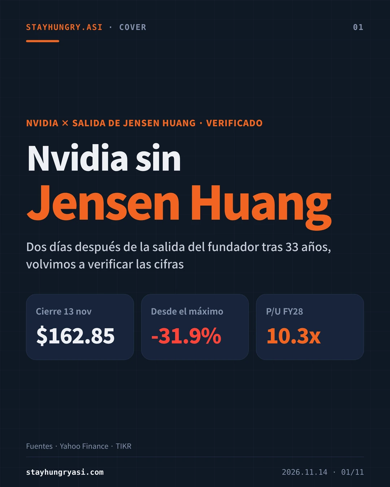
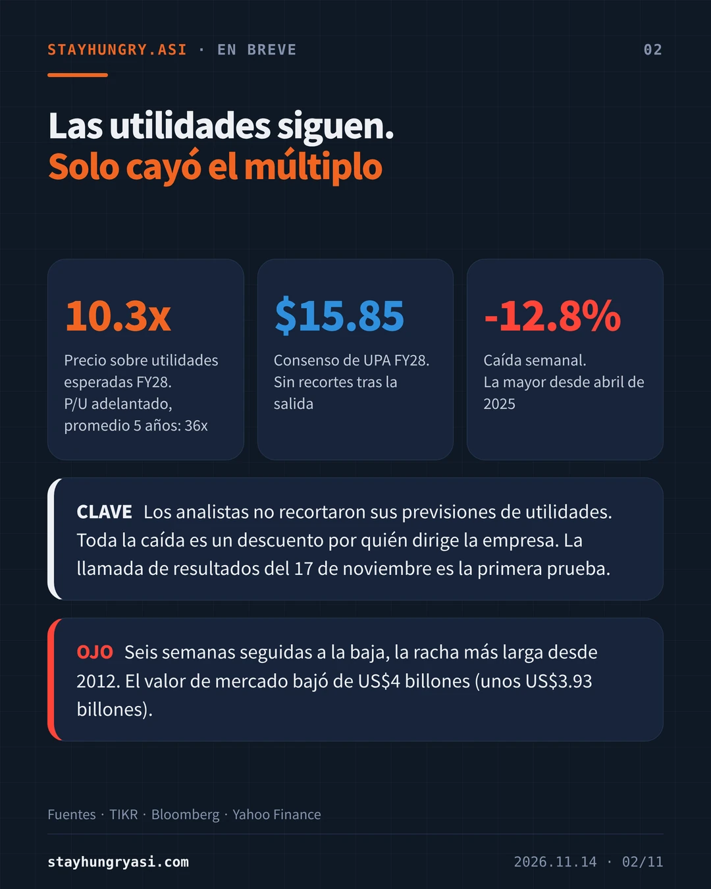
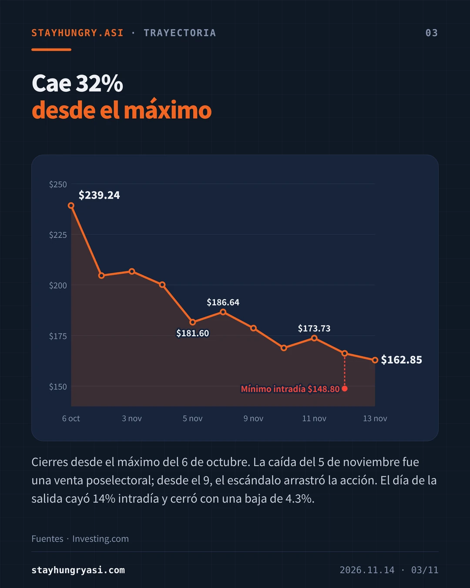
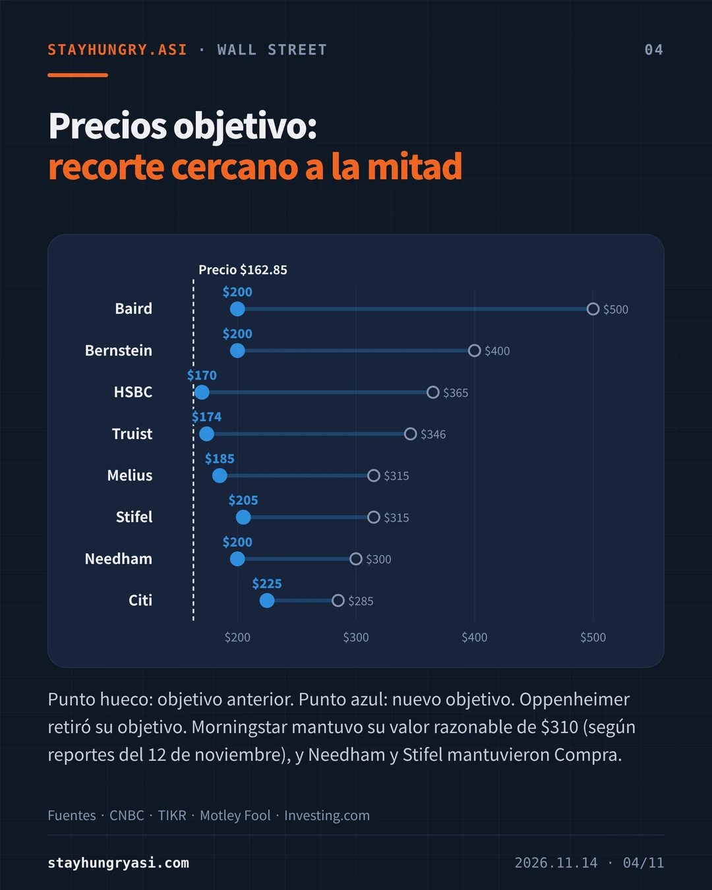
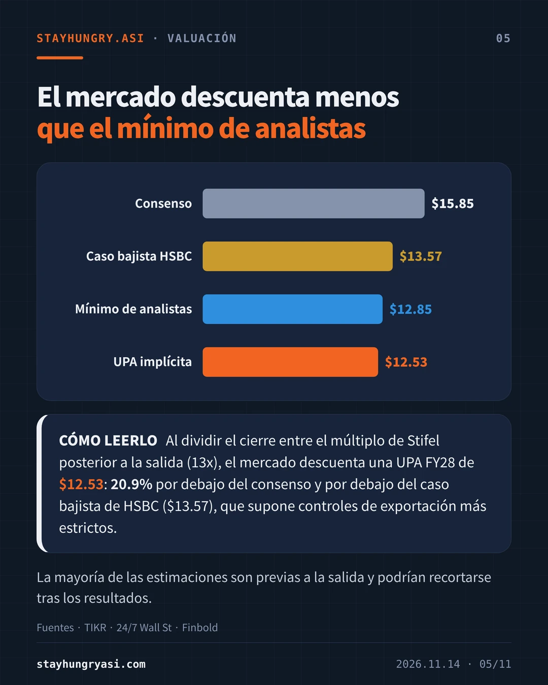
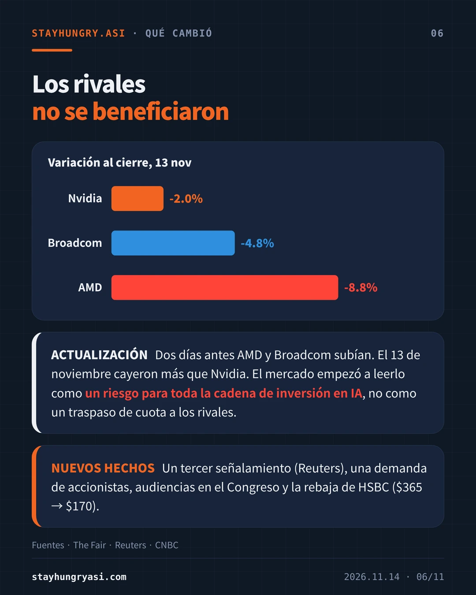
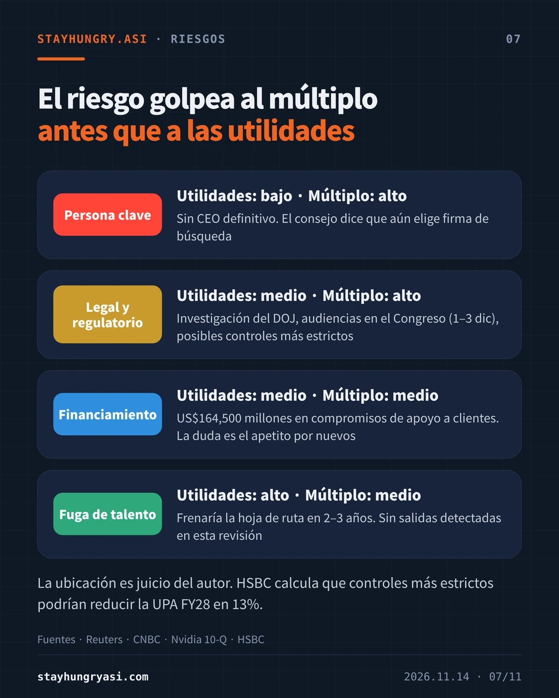
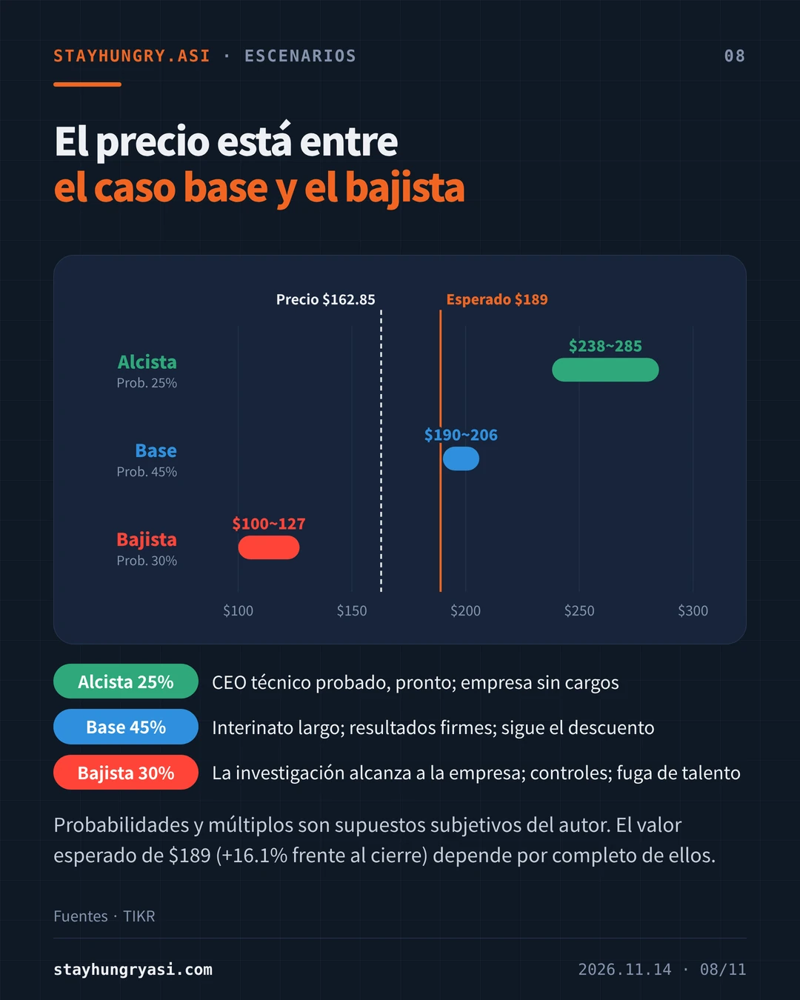
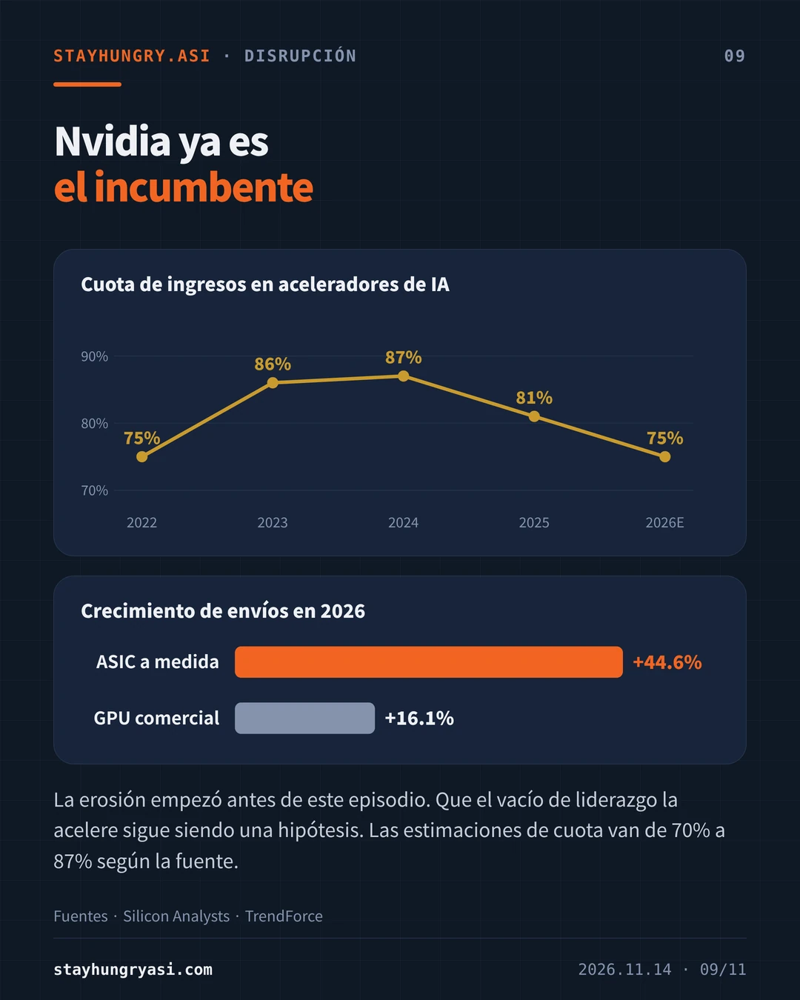
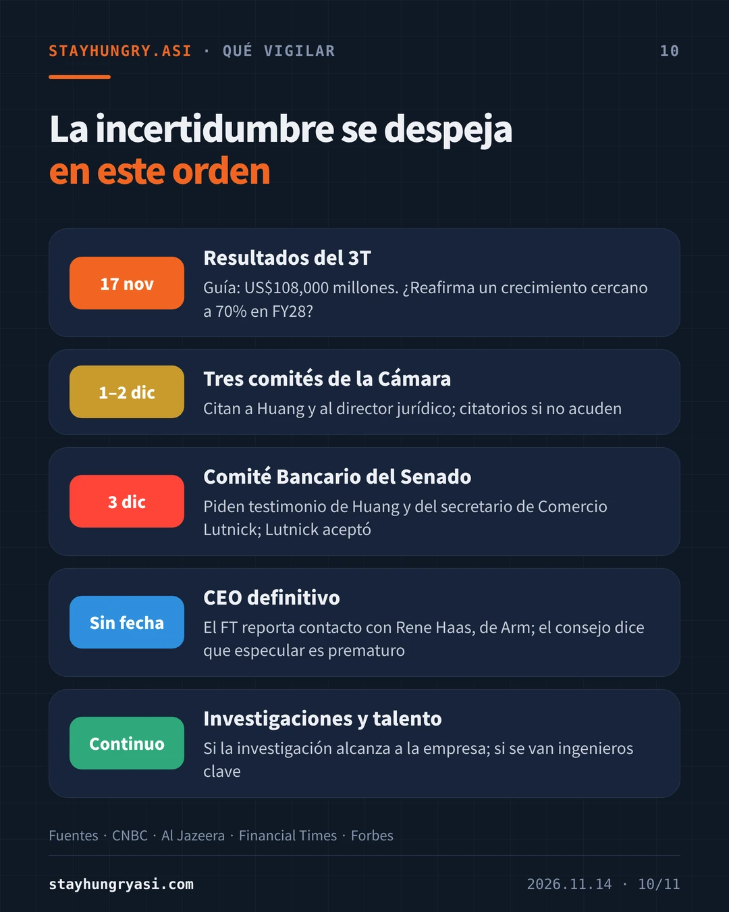
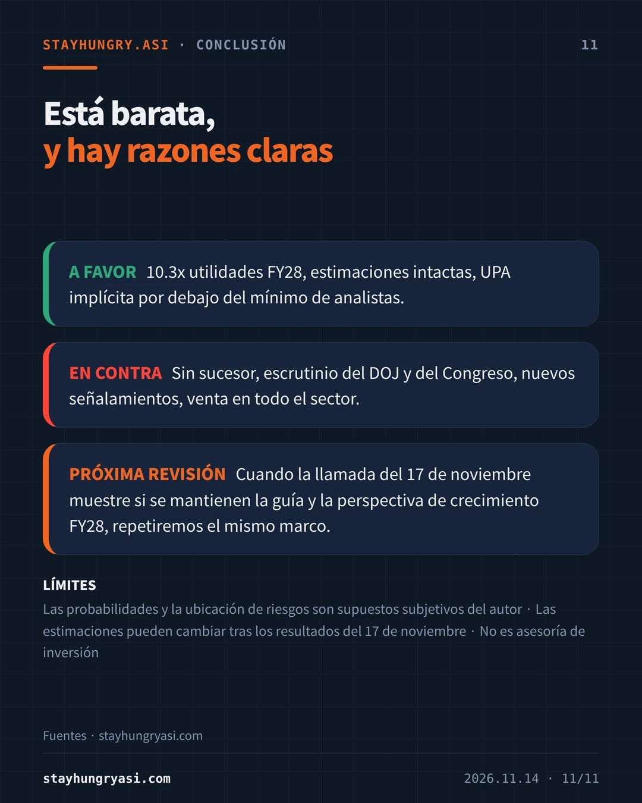
| Fecha | Hecho |
|---|---|
| 2026-10-06 | Cierre récord de $239.24 |
| 2026-11-05 | Baja de 9.26% a $181.60 en una venta poselectoral |
| 2026-11-08 | Huang admite una relación extramarital y se disculpa con los empleados. El consejo abre una investigación independiente sobre si fue blanco de un esfuerzo de inteligencia extranjera |
| 2026-11-11 | Tras el cierre, reportes indican que el consejo prepara su destitución. La acción cae 8.6% fuera de horario |
| 2026-11-12 | Se anuncia la renuncia. La acción toca $148.80 intradía y cierra en $166.19 (baja de 4.34%) |
| 2026-11-13 | HSBC rebaja su recomendación. Cierre de $162.85 (baja de 2.01%); baja semanal de 12.8% |
La empresa no explicó la renuncia y no se ha establecido ninguna falta en materia de seguridad nacional. El fiscal general de EE. UU. dijo el 12 de noviembre que el Departamento de Justicia no ha determinado si la persona involucrada es espía. Tras la renuncia, Reuters reportó una presunta relación con otra empleada.
La baja semanal de 12.8% es la mayor desde abril de 2025, y seis semanas seguidas a la baja es la racha más larga desde 2012. El valor de mercado ronda US$3.93 billones, por debajo de US$4 billones. Al menos 9 firmas rebajaron la acción a recomendaciones de tipo Mantener.
| Firma | Objetivo anterior | Nuevo objetivo | Recomendación |
|---|---|---|---|
| Baird | $500 | $200 | Neutral |
| Bernstein | $400 | $200 | Market Perform |
| HSBC | $365 | $170 | Mantener |
| Truist | $346 | $174 | Mantener |
| Melius | $315 | $185 | Mantener |
| Stifel | $315 | $205 | Compra (se mantiene) |
| Needham | $300 | $200 | Compra (se mantiene) |
| Citi | $285 | $225 | No indicado |
Oppenheimer retiró su precio objetivo. Morningstar mantuvo su valor razonable de $310 (según reportes del 12 de noviembre). Los reportes sobre el objetivo anterior de HSBC difieren ($365 y $375); aquí se sigue a la mayoría.
| Concepto | UPA FY28 |
|---|---|
| Consenso (15.77 a 15.93 según la fuente) | $15.85 |
| Caso bajista de HSBC (controles de exportación más estrictos) | $13.57 |
| Estimación más baja de analistas | $12.85 |
| UPA implícita en el mercado (cálculo del autor) | $12.53 |
La UPA implícita es el cierre de $162.85 dividido entre el múltiplo de 13x que Stifel aplicó tras la salida. Está 20.9% por debajo del consenso y por debajo de la estimación más baja. El P/U adelantado a 12 meses promedió 36x en cinco años. Sin embargo, la mayoría de las estimaciones son previas a la salida y podrían recortarse tras los resultados del 17 de noviembre.
Hasta el inicio de la sesión del 12 de noviembre, AMD y Broadcom subían. El 13 de noviembre AMD cayó 8.75% y Broadcom 4.76%, ambos más que Nvidia. Una lectura es que el mercado empezó a descontar un riesgo para toda la cadena de inversión en IA y no un traspaso de cuota (juicio del autor). Nvidia ha apoyado la construcción de centros de datos de sus clientes con garantías y compromisos; según su informe trimestral de julio de 2026, los compromisos de apoyo a clientes suman US$164,500 millones.
| Riesgo | Impacto (juicio del autor) | Situación actual |
|---|---|---|
| Persona clave | Utilidades: bajo · Múltiplo: alto | Sin CEO definitivo. El consejo dice que aún elige firma de búsqueda |
| Legal y regulatorio | Utilidades: medio · Múltiplo: alto | Investigación del DOJ, audiencias en el Congreso (1–3 dic), posibles controles más estrictos |
| Financiamiento | Utilidades: medio · Múltiplo: medio | US$164,500 millones en compromisos de apoyo a clientes. La duda es el apetito por nuevos |
| Fuga de talento | Utilidades: alto · Múltiplo: medio | Frenaría la hoja de ruta en 2–3 años. Sin salidas detectadas en esta revisión |
HSBC calcula que controles de exportación más estrictos podrían reducir la UPA FY28 en 13%.
| Escenario | Probabilidad | Supuesto de UPA | Múltiplo | Rango de precio | Condiciones |
|---|---|---|---|---|---|
| Alcista | 25% | $15.85 se mantiene | 15–18x | $238~285 | CEO técnico probado, pronto; empresa sin cargos |
| Base | 45% | $15.85 se mantiene | 12–13x | $190~206 | Interinato largo; resultados firmes; sigue el descuento |
| Bajista | 30% | Recorte de 20–30% | 9–10x | $100~127 | La investigación alcanza a la empresa; controles; fuga de talento |
El valor ponderado por probabilidad es $189, 16.1% por encima del cierre. Depende por completo de los supuestos anteriores y no es un precio objetivo.
Se estima que la cuota de Nvidia en ingresos de aceleradores de IA bajará de cerca de 87% en 2024 a cerca de 75% en 2026 (Silicon Analysts). Para 2026 se prevé que los envíos de ASIC a medida crezcan 44.6% frente a 16.1% de las GPU comerciales (TrendForce). La erosión empezó antes de este episodio. Que el vacío de liderazgo la acelere es una hipótesis, y la fuerte caída de los rivales el 13 de noviembre no encaja con ella. Las estimaciones de cuota van de 70% a 87% según la fuente.
| Cuándo | Evento | Qué revisar |
|---|---|---|
| 17 nov | Resultados del 3T | Guía: US$108,000 millones. ¿Reafirma un crecimiento cercano a 70% en FY28? |
| 1–2 dic | Tres comités de la Cámara | Citan a Huang y al director jurídico; citatorios si no acuden |
| 3 dic | Comité Bancario del Senado | Piden testimonio de Huang y del secretario de Comercio Lutnick; Lutnick aceptó |
| Sin fecha | CEO definitivo | El FT reporta contacto con Rene Haas, de Arm; el consejo dice que especular es prematuro |
| Continuo | Investigaciones y talento | Si la investigación alcanza a la empresa; si se van ingenieros clave |